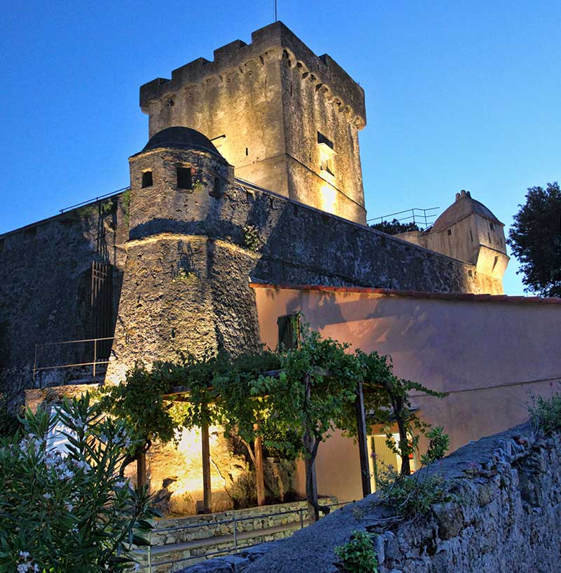

01
Operating systems
We map how work actually moves through your business, then rebuild the systems and hand-offs so nothing falls between teams.
Operations and AI advisory
Terenzo is an AI and technology operations consulting firm. We help mid-market companies, 200 to 2000 employees, turn AI into measurable operating improvements, working directly with CFOs and COOs. We streamline the systems, hand-offs, and decisions, and put AI to work only where it earns its place.
Built by operators from the enterprise SaaS, AWS, Microsoft, and Salesforce world.
What we do
01
We map how work actually moves through your business, then rebuild the systems and hand-offs so nothing falls between teams.
02
Clear numbers, owned by someone, arriving on time. We fix the reporting layer so leaders decide on facts, not folklore.
03
No theatre. We deploy AI on the few processes where it pays for itself, and leave the rest of the org calmly alone.
Who it's for
Terenzo is the firm a CFO or COO hires when the operating model has outgrown the spreadsheets. Senior, calm, accountable. In and out with the mess sorted, not a year-long engagement that never ends.
Founders
Drew Jennings
Partner, operations and delivery
Leads how Terenzo delivers. More than a decade in enterprise SaaS revenue and partnerships, a Salesforce implementation partner, with an AWS Solutions Architect certification and a JD from the University of Washington School of Law.
LinkedInGordie Flowers
Partner, growth and partnerships
Owns the front of the firm: clients and partnerships. He has spent his career in enterprise cloud and AI, with experience across AWS and Microsoft.
LinkedIn
The promise
We come in senior, sort the mess, and hand back systems your team can run without us. No year-long engagement that never ends.
Contact
Tell us where the operating model is straining. We will tell you whether an AI operations audit is the right next step, and what it would find.